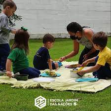
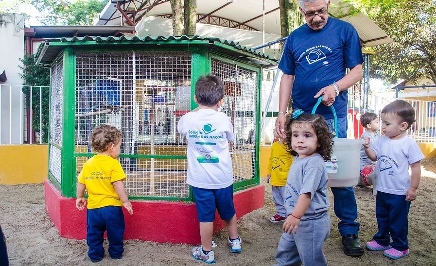

Unidade 1 - Taubaté
Fundada em 1970
A unidade 1 está localizada em Taubaté e contém o Berçario, a Educação Infantil e Fundamental I e II

Unidade 2 - Tremembé
Fundada em 2019
A unidade 2 está localizada em Tremembé e contém a Educação Infantil e Fundamental I e II

Berçario
Inaugurado em 2020
O berçario está localizado na unidade I

Educação Infantil
Em funcionamento desde a inalguração da escola
Alunos do G1(Grupo 1) até o 1° ano
Os Fundamentais

Fundamental I - Anos Iniciais
O Fundamental I, ou Fundamental Anos Iniciais dá aulas para alunos do 2° ano até o 5° ano
Fundamental II - Anos Finais
O Fundamental II, ou Fundamental Anos Finais dá aulas para alunos do 6° ano até o 9° ano
Jardim + verde
-
Lixômetro do Jardim

A Escola Jardim das Nações obteve estes números por meio de práticas como:
• A redução de uso de copos descartáveis;
• A criação de Pontos de Entrega Voluntária (PEV) para o descarte correto de baterias, eletrônicos, pilhas, oléo de cozinha, etc.;
• A prática da coleta seletiva;
• O envio de restos de alimentos para criadores de animais;
Entre outras atividades.